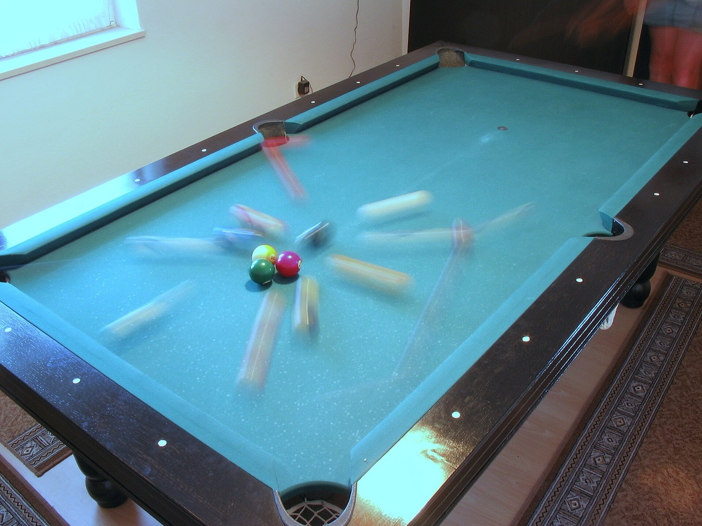

Задача трёх тел · глава 5 из 35
Партия в бильярд

Кратко
Ван Мяо навещает Дин И, возлюбленного Ян Дун, который пьёт в её пустой квартире. Дин говорит, что сама Ян Дун с «Границами науки» почти не общалась. Чтобы объяснить, отчего она погибла, он раз за разом бьёт по бильярдным шарам: где бы ни стоял стол и когда бы ни был сделан удар, шар ведёт себя одинаково — на этом и стоит физика, законы природы неизменны. А теперь новые ускорители частиц при одних и тех же условиях выдают несовместимые результаты, как если бы шар каждый раз летел куда попало. Для физика это значит, что законов природы нет. Дин И даёт Ван Мяо адрес матери Ян Дун.
Главные моменты
- Бильярдный стол как модель науки: один и тот же удар — один и тот же результат.
- Ускорители выдают бессмыслицу — словно законы природы сломались.
- Для теоретика вроде Ян Дун крушение физики равносильно крушению мира.
Значение
Объяснение, почему гибнут физики: удар нанесён по самой вере в познаваемость мира. Откуда берутся «сломанные» эксперименты, станет ясно лишь в главе о софонах.